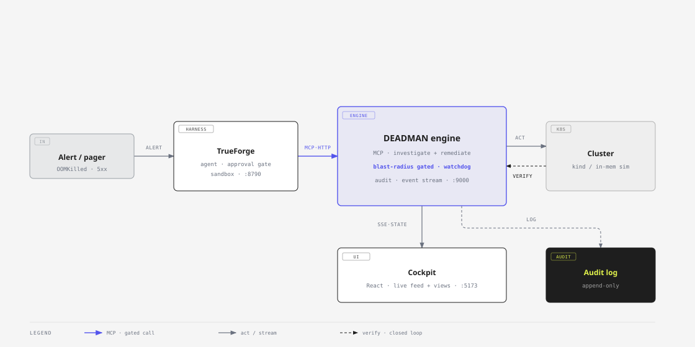

Status
Healthy
real incident
Every incident bot diagnoses. DEADMAN acts. It investigates the incident. Applies the fix. Cleans up after itself. Destructive actions pause for human approval. Catastrophic ones are refused outright.
checkout is OOMKilled: working set 451Mi meets the 256Mi limit.
suspected rev 3 cut mem limit 512 to 256Mi 4m before onsetAlerting pages you. Dashboards show you. Chatbots explain the outage back to you. At 3am none of them touch production. Someone still has to log in. Run the fix. Watch it hold.
Graduated autonomy. Defense in depth. A live cockpit that streams every step the agent takes.
Every write is routed by blast radius. The harness owns the visible safety.
DEADMAN watches after every fix. If it doesn't hold it reverts and escalates. Reversibility is a primitive.
An alert that says "delete the database" is flagged and ignored. Alerts are data. Never commands.
Finds the smoking gun: the incident began 4 minutes after the memory limit was cut. Real SRE triage.
Forks the cluster state. Proves the fix resolves it. Then applies to prod. Rehearse before you touch prod.
An alert enters the harness. It calls the DEADMAN engine over MCP. Reads are free. Writes pass a blast-radius approval gate. Every step streams to the cockpit.

Grounded root cause from live signals. Plus the recent change most likely to blame.
The gate shows the diff. The blast radius. The rollback plan. And a sandbox rehearsal marked PASS or FAIL before you Allow.
The fix is applied. Verified closed-loop. Then watched. If it doesn't hold it auto-reverts.
Open source. Built on TrueForge. Safe by construction. Safe fixes auto-run. Destructive ones gate. Catastrophic ones are refused.
View on GitHub